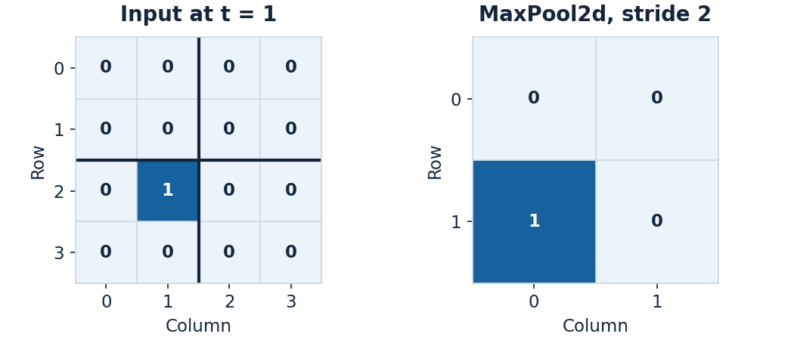
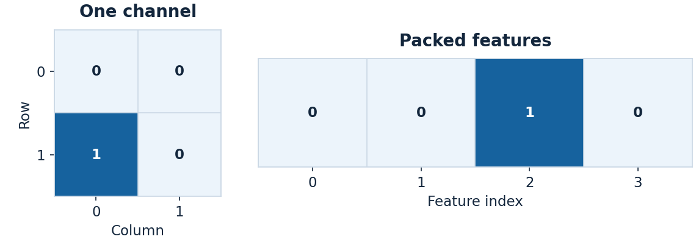
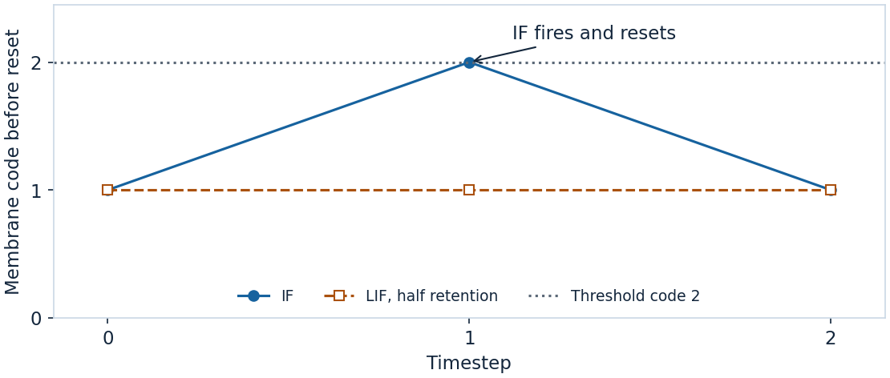

spikepress.nn#
See PyTorch authoring for layouts and state lifecycle, and support for operator/profile constraints. These layers use the defined QAT/integer neuron behavior, not arbitrary external-library neuron semantics. The short names below are aliases of the canonical classes documented here.
Preferred names are the short names in the table. Existing Event* names
remain compatible aliases. See parameters for defaults,
shapes, units and constraints.
IFLinear includes trainable weights and temporal IF state. Threshold is a
stateless single-step binary comparison: no weights, temporal membrane or
surrogate gradient. It is not a standalone recurrent IF/LIF training neuron.
Training preset#
- class SparseEventTrainingPreset(name: 'str' = 'hw_if_uniform_sparse', timesteps: 'int' = 1, weight_bits: 'int' = 4, state_bits: 'int' = 16, decay: 'float' = 1.0, reset_mode: 'str' = 'zero', bias: 'bool' = False, surrogate_slope: 'float' = 25.0, initial_threshold: 'float' = 0.155, schema: 'str' = 'spikepress.sparse_event_training_preset.v3')#
Use one preset for every recurrent layer in a window. The examples below use three steps, a 4-bit weight grid, 16-bit state, and surrogate gradients.
import torch
from spikepress.nn import (
Conv1d, Conv2d, IFLinear, LIFConv1d, LIFConv2d, LIFLinear,
MaxPool1d, MaxPool2d, Threshold,
)
from spikepress.sparse_event_training import SparseEventTrainingPreset
preset = SparseEventTrainingPreset(timesteps=3)
assert preset.weight_bits == 4 and preset.state_bits == 16
Short name |
Canonical class |
|---|---|
|
|
|
|
|
|
|
|
|
|
Convolution#
- class EventConvIF1d(in_channels, out_channels, *, groups=1, kernel_size=3, stride=1, padding=None, initial_threshold=None, preset=None)#
One-dimensional event convolution lowered onto the resident 2D core.
Initialize internal Module state, shared by both nn.Module and ScriptModule.
A unit kernel on a one-channel signal keeps time and length. Set the weight and threshold to 1 so a single event produces one spike at the same position.
signal = torch.zeros(1, 3, 1, 4) # B,T,C,L
signal[0, 1, 0, 2] = 1
conv1d = Conv1d(1, 1, kernel_size=1, preset=preset).eval()
with torch.no_grad():
conv1d.weight.fill_(1)
conv1d.threshold.fill_(1)
out = conv1d(signal)
assert out.shape == signal.shape
assert out.nonzero().tolist() == [[0, 1, 0, 2]]
- class EventConvLIF1d(in_channels, out_channels, *, decay=None, decay_shift=None, groups=1, kernel_size=3, stride=1, padding=None, initial_threshold=None, preset=None)#
Shift-LIF one-dimensional convolution using the same 2D state core.
Initialize internal Module state, shared by both nn.Module and ScriptModule.
Apply half retention at each step. This is the same layout as Conv1d, so a
model can replace the layer without changing the input shape.
lif1d = LIFConv1d(1, 1, kernel_size=1, decay_shift=1, preset=preset).eval()
with torch.no_grad():
lif1d.weight.copy_(conv1d.weight)
lif1d.threshold.copy_(conv1d.threshold)
assert torch.equal(lif1d(signal), out)
The isolated pulse reaches threshold immediately in both examples. See the direct-current example for a sequence where retention changes the output.
- class EventConvIF2d(in_channels, out_channels, *, groups=1, kernel_size=3, stride=1, padding=0, initial_threshold=None, preset=None)#
INT4 reset-zero IF over BCHW (T=1) or BTCHW inputs.
The training preset fixes T (1..64). State persists within one temporal input and resets between calls. This IF block has no leak; temporal ShiftLIF deployment is a separate compiler contract.
Initialize internal Module state, shared by both nn.Module and ScriptModule.
Here a 3×3 kernel with padding 1 preserves the height and width. Only the center weight is nonzero, so the event stays at row 2, column 1.
frames = torch.zeros(1, 3, 1, 4, 4) # B,T,C,H,W
frames[0, 1, 0, 2, 1] = 1
conv2d = Conv2d(1, 1, kernel_size=3, padding=1, preset=preset).eval()
with torch.no_grad():
conv2d.weight.zero_()
conv2d.weight[0, 0, 1, 1] = 1
conv2d.threshold.fill_(1)
out = conv2d(frames)
assert out.shape == frames.shape
assert out.nonzero().tolist() == [[0, 1, 0, 2, 1]]
- class EventConvLIF2d(in_channels, out_channels, *, decay=None, decay_shift=None, groups=1, kernel_size=3, stride=1, padding=0, initial_threshold=None, preset=None)#
INT4 reset-zero shift-LIF over admitted 2D event inputs.
Initialize internal Module state, shared by both nn.Module and ScriptModule.
Use a stride of 2 to reduce each 4×4 frame to 2×2. Put the input event on a sampled coordinate so it appears at output row 1, column 1.
stride_input = torch.zeros_like(frames)
stride_input[0, 1, 0, 2, 2] = 1
lif2d = LIFConv2d(1, 1, kernel_size=3, stride=2, padding=1,
decay_shift=1, preset=preset).eval()
with torch.no_grad():
lif2d.weight.copy_(conv2d.weight)
lif2d.threshold.copy_(conv2d.threshold)
out = lif2d(stride_input)
assert out.shape == (1, 3, 1, 2, 2)
assert out.nonzero().tolist() == [[0, 1, 0, 1, 1]]
Linear and pooling#
- class EventLinearIF(in_features, out_features, *, initial_threshold=None, preset=None)#
Reset-zero IF linear layer on explicit B,C,1,1 or B,T,C,1,1 events.
Initialize internal Module state, shared by both nn.Module and ScriptModule.
A sequence of two features can use the compact authoring layout B,T,C.
Identity weights map the two input events to different output features.
features = torch.tensor([[[1., 0.], [0., 1.], [0., 0.]]])
if_linear = IFLinear(2, 2, preset=preset).eval()
with torch.no_grad():
if_linear.weight.copy_(torch.eye(2)[:, :, None, None])
if_linear.threshold.fill_(1)
assert torch.equal(if_linear(features), features)
- class EventLinearLIF(in_features, out_features, *, decay, decay_shift=None, initial_threshold=None, preset=None)#
Shift-LIF linear layer over explicit unit-spatial event features.
Initialize internal Module state, shared by both nn.Module and ScriptModule.
For the same feature sequence, choose exact half retention. A unit-spatial
B,T,C,1,1 input keeps its singleton spatial axes on output.
lif_linear = LIFLinear(2, 2, decay=0.5, preset=preset).eval()
spatial_features = features[..., None, None]
with torch.no_grad():
lif_linear.weight.copy_(if_linear.weight)
lif_linear.threshold.copy_(if_linear.threshold)
assert torch.equal(lif_linear(spatial_features), spatial_features)
- class EventMaxPool1d(kernel_size=2, stride=2, padding=0)#
Binary 1D max pooling mapped to a fixed sparse K3 convolution.
Initialize internal Module state, shared by both nn.Module and ScriptModule.
Pool each pair of neighboring positions independently for every timestep. The event at input index 2 moves to output index 1.
pooled_signal = MaxPool1d(kernel_size=2, stride=2)(signal)
assert pooled_signal.shape == (1, 3, 1, 2)
assert pooled_signal.nonzero().tolist() == [[0, 1, 0, 1]]
- class EventMaxPool2d(kernel_size=2, stride=2, padding=0)#
Binary 2D max pooling; the preferred public name is
MaxPool2d.Initialize internal Module state, shared by both nn.Module and ScriptModule.
Each 2×2 tile produces one event if any pixel in the tile fired. The event at row 2, column 1 moves to row 1, column 0. Time stays at step 1.
pooled_frames = MaxPool2d(kernel_size=2, stride=2)(frames)
assert pooled_frames.shape == (1, 3, 1, 2, 2)
assert pooled_frames.nonzero().tolist() == [[0, 1, 0, 1, 0]]

The 2×2 tiles at timestep 1. Bold lines delimit the pooling windows.#
Threshold and terminal helpers#
These helpers have their own frontend/layout constraints; importing them does not imply independent multi-step FPGA support. See the support matrix.
- class EventIF(channels, threshold=1)#
Stateless binary threshold; the preferred public name is
Threshold.This single-step comparison has no weights, membrane state or surrogate gradient. Use the fused IF/LIF layers for native temporal training.
Initialize internal Module state, shared by both nn.Module and ScriptModule.
A current equal to the threshold fires in this stateless comparison.
current = torch.tensor([[0., 2., 3.]]) # B,C for one step
events = Threshold(channels=3, threshold=2)(current)
assert events.tolist() == [[0., 1., 1.]]
- class EventReadout(*args, **kwargs)#
Terminal unweighted event-tensor readout.
Initialize internal Module state, shared by both nn.Module and ScriptModule.
Place EventReadout at the end of an event backbone. Its PyTorch forward
preserves every event and returns the same tensor.
from spikepress.nn import EventReadout
terminal = EventReadout()(pooled_frames)
assert terminal is pooled_frames
- pack_event_features(inputs)#
Explicitly map BCHW binary events to B,C,1,1 in row-major order.
For one frame, fold its channels, rows, and columns into a feature axis. Here the firing output pixel at row 1, column 0 becomes feature 2.
from spikepress.nn import pack_event_features
packed = pack_event_features(pooled_frames[:, 1]) # select t=1, then BCHW
assert packed.shape == (1, 4, 1, 1)
assert packed.reshape(-1).tolist() == [0., 0., 1., 0.]

pack_event_features keeps channel order and visits columns fastest within a channel.#
Direct-current input#
These primitives are not enabled on the included deployment image. Check compatibility before selecting them for deployment.
- class DirectCurrentIF(channels, *, timesteps, scale, threshold=1, decay_shift=0)#
Fixed-scale current input with integer-equivalent IF forward values.
Forward spikes use hard threshold/reset. Straight-through current quantization and a sigmoid spike surrogate supply training gradients. This module is a software reference until its FPGA input ABI is admitted.
Initialize internal Module state, shared by both nn.Module and ScriptModule.
Each 0.5 input becomes code 1 at scale 0.5. With threshold code 2, the IF neuron adds two steps and then resets.
from spikepress.nn import DirectCurrentIF, DirectCurrentLIF
current_window = torch.full((1, 3, 1, 1, 1), 0.5)
if_neuron = DirectCurrentIF(1, timesteps=3, scale=0.5, threshold=2)
assert if_neuron(current_window).reshape(-1).tolist() == [0., 1., 0.]
- class DirectCurrentLIF(channels, *, timesteps, scale, threshold=1, decay=None, decay_shift=None)#
Direct current with the existing arithmetic shift decay encoding.
Initialize internal Module state, shared by both nn.Module and ScriptModule.
With half retention, previous code 1 decays to 0 by integer shift, so the same window never reaches threshold code 2.
lif_neuron = DirectCurrentLIF(1, timesteps=3, scale=0.5,
threshold=2, decay_shift=1)
assert lif_neuron(current_window).reshape(-1).tolist() == [0., 0., 0.]

Integer membrane value before threshold and reset for the same three inputs.#
Compatibility helpers#
Resident OR is not supported by the included image. Use the explicit ADD path for supported residual addition; ADD and OR are not interchangeable. The older API remains importable for compatibility.
- class OrResidual(*args, **kwargs)#
Compatibility OR merge over same-shaped binary event tensors.
Resident OR is disabled in the included image. Arithmetic residual ADD uses a different export path and must not be replaced with OR.
Initialize internal Module state, shared by both nn.Module and ScriptModule.
For compatibility with an older binary OR graph, merge the two branches element by element. The coincident events in the middle produce a single 1.
from spikepress.nn import OrResidual
left = torch.tensor([[0., 1., 1.]])
right = torch.tensor([[1., 1., 0.]])
assert OrResidual()(left, right).tolist() == [[1., 1., 1.]]